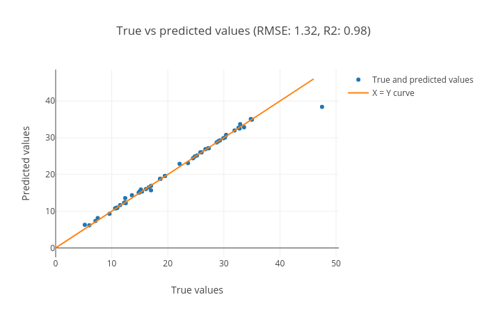

Machine learning is a subset of artificial intelligence (AI) that provides machines with the ability to automatically learn from data without being explicitly programmed. It is a combined field of computer science, mathematics and statistics to create a predictive model by learning patterns in a dataset. The dataset may have an output field which makes the learning process supervised. The supervised learning methods in machine learning have outputs (also called as targets or classes or categories) defined in the datasets in a column. These targets can either be integers or real (continuous) numbers. When the targets are integers, the learning task is known as classification. Each row in the dataset is a sample and the classification is assigning a class label/target to each sample. The algorithm which is used for this learning task is called a classifier. When the targets are real numbers, the learning task is called regression and the algorithm which is used for this task is called a regressor. We will go through classification first and look at regression later in this tutorial.
question Question
What are features and outputs/targets in a dataset?
solution Solution
Features and targets of a breast cancer dataset:
Figure 1: The image shows a breast cancer dataset with 8 rows and 10 columns. Each column is a feature and encodes a specific information about breast cancer or detected tumor. For example, the feature "clump thickness" gives information about the cells whether they are mono or multi-layered. Similarly, other columns/features provide different information about tumor. The last column is the "target" column which identifies whether the tumor is benign (0) or malignant (1) for each row of the dataset. Here, the targets are discreet which makes the learning task classification. In another task, if these targets contain continuous values, the learning task will become regression.
Classification task assigns a category/class to each sample by learning a decision boundary in a dataset. This dataset is called a training dataset and contains samples and desired class/category for each sample. The training dataset contains “features” as columns and a mapping between these features and the target is learned for each sample. The performance of mapping is evaluated using a test dataset (it is separate from training dataset). The test dataset contains only the feature columns and not the target column. The target column is predicted using the mapping learned on the training dataset. In this tutorial, we will use a classifier to train a model using a training dataset, predict the targets for test dataset and visualize the results using plots.
comment Comment
The terms like ‘targets’, ‘classes’, ‘categories’ or ‘labels’ have been used interchangeably for the classification part of this tutorial. They contain identical meaning. For regression, we will just use ‘targets’.
Figure 2: Classification of samples belonging to different classes (green for no tumor and violet for tumor). The line creates a boundary between two sets of samples and is learned by a classifier. When a new sample comes for which we do not know whether it is a tumor or no tumor, we use this decision boundary to compute the actual class.
In figure 2, the line is a boundary which separates a class from another class (for example from tumor to no tumor). The task of a classifier is to learn this boundary which can be used to classify or categorize an unseen/new sample. The line is the decision boundary. There are different ways to learn this decision boundary. If the dataset is linearly separable, linear classifiers can produce good classification results. But, when the dataset is complex and requires non-linear decision boundaries, the powerful classifiers like support vector machine or tree or ensemble based classifiers may prove to be beneficial. In the following part, we will perform classification on breast cancer dataset using a linear classifier and then will analyze the results with plots. Let’s begin by uploading the necessary datasets.
Data upload
The datasets to be used for classification contain 9 features. Each feature contains some unique information about breast cancer including the thickness of clump, cell-size, cell-shape and so on. More information about the dataset can be found here - a and b. In addition to these features, the training dataset contains one more column as the target. It has a binary value (0 or 1) for each row. 0 indicates no breast cancer (benign) and 1 (malignant) indicates breast cancer. The test dataset does not contain the target column (which should be predicted by a classifier). The third dataset contains all the samples from the test dataset but also the target column which would be needed to compare between real and predicted targets.
hands_on Hands-on: Data upload
Create a new history for this tutorial
tip Tip: Creating a new history
Click the new-history icon at the top of the history panel
If the new-history is missing:
Click on the galaxy-gear icon (History options) on the top of the history panel
Select the option Create New from the menu
Import the following datasets and choose the type of data as tabular
Open the Galaxy Upload Manager (galaxy-upload on the top-right of the tool panel)
Select Paste/Fetch Data
Paste the link into the text field
Press Start
Close the window
By default, Galaxy uses the URL as the name, so rename the files with a more useful name.
Rename datasets to breast-w_train, breast-w_test and breast-w_targets
tip Tip: Renaming a dataset
Click on the galaxy-pencilpencil icon for the dataset to edit its attributes
In the central panel, change the Name field
Click the Save button
Learn using training dataset
The training dataset is used for learning the associations between features and the targets. The classifier learns general patterns in a dataset and saves a trained model. This model can be used for classifying a new sample. In this step, we will use breast-w_train as the training dataset and apply SVM (support vector machine) classifier. It will learn features from the dataset and maps them to the targets. This mapping is called a trained model. The training step produces a model file of type zip.
hands_on Hands-on: Train the model
Support vector machines (SVMs) for classificationtool with the following parameters to train the classifier on training dataset:
“Select a Classification Task”: Train a model
“Classifier type”: Linear Support Vector Classification
“Choose how to select data by column”: All columns but by column header name(s)
“Type header name(s)”: target
param-file“Dataset containing class labels”: breast-w_train
“Does the dataset contain header”: Yes
“Choose how to select data by column”: Select columns by column header name(s)
“Select target column(s)”: target
Rename the generated file to model
question Question
What is learned by the classifier?
solution Solution
Two attributes coef_ and intercept_ are learned by the classifier using the training dataset. The coef_ contains importance weight for each feature and intercept_ is just a
constant scalar. However, for different classifiers, these attributes are different. The attributes shown here are specific to the Linear support vector classifier.
These attributes are stored in the trained model and can be accessed by reading this file.
Predict categories of test dataset
After the training process completes, we can see the trained model file (zip file) which contains information about patterns in the form of weights. The trained model is used to predict the classes of the test (breast-w_test) dataset. It assigns a class (either tumor or no tumor) to each row in the breast-w_test dataset.
hands_on Hands-on: Predict classes using the trained model
Support vector machines (SVMs) for classificationtool with the following parameters to predict classes of test dataset using the trained model:
“Select a Classification Task”: Load a model and predict
param-file“Models”: model file (output of the previous step)
param-file“Data (tabular)”: breast-w_test file
param-check“Does the dataset contain header”: Yes
param-select“Select the type of prediction”: Predict class labels
Rename the generated file to predicted_labels
Visualise prediction
We should evaluate the quality of predictions by comparing them against the true targets. To do this, we will use another dataset (breast-w_targets). It is the same as the test dataset (breast-w_test) but contains an extra target column containing the true classes of the test dataset. With the predicted and true classes, the learned model is evaluated to verify how correct the predictions are. To visualise these predictions, a plotting tool is used. It creates three plots - confusion matrix, precision, recall and F1 and ROC and AUC. We will mainly analyze the precision and recall plot.
hands_on Hands-on: Check and visualize the predictions
Plot confusion matrix, precision, recall and ROC and AUC curvestool with the following parameters to visualise the predictions:
param-file“Select input data file”: breast-w_targets
param-file“Select predicted data file”: predicted_labels
Figure 3: Confusion matrix of the predictions as a heatmap. The horizontal axis (x-axis) shows the predicted labels and the vertical axis (y-axis) shows the true labels. Each rectangular box shows a count of samples falling into the four output combinations (true class, predicted class) - (1, 0), (1, 1), (0, 1) and (0, 0). For a good prediction, the diagonal running from top-left to bottom-right should contain less number of samples (because it shows the counts of incorrectly predicted samples). Hovering over each box in Galaxy shows the true and predicted class labels and the count of samples.
Figure 4: Precision, recall and F1 score. These scores determine the robustness of classification. It shows 1 for both the classes (shown along the horizontal axis) which means that all the samples belonging to these classes have been classified correctly. In the 'breast-w_test' dataset, all the samples with predicted class '0' (no tumor) have the true class as '0' (precision = 1.0) while not all samples with the predicted class as '1' have the true class as '1' (precision < 1.0) (see precision curve). The recall curve is the opposite of the precision curve. Not all the samples with the true class as '0' are predicted as class '0' (recall < 1.0) and all the samples with the true class as '1' are predicted as class '1' (recall = 1.0) (see recall curve). It is important to analyze the plot for any classification task to verify the accuracy across different classes which provides more information about the balanced or imbalanced accuracy across multiple classes present in the dataset.
Figure 5: Receiver operator characteristics (ROC) and area under ROC (AUC). The ROC curve is shown in blue. For a good prediction, it should be more towards the top-left of this plot. For a bad prediction, it is close to the orange line (y = x).
Using these plots, the robustness of classification can be visualized.
Summary
By following these steps from data upload until plotting, we have learned how to do classification and visualise the predictions using Galaxy’s machine learning and plotting tools. A similar analysis can be performed using a different dataset or by using a different classifier. This machine learning suite provides multiple classifiers from linear to complex ones suited for different classification tasks. For example for a binary class classification, support vector machine classifier may perform well. It is recommended to try out different classifiers on a dataset to find the best one.
Regression
For classification, the targets are integers. But, when the targets in a dataset are real numbers, the machine learning task becomes regression. Each sample in the dataset has a real-valued output or target. Figure 6 shows how a (regression) curve is fit which explains most of the data points (blue balls). Here, the curve is a straight line (red). The regression task is to learn this curve which explains the underlying distribution of the data points. The target for a new sample will lie on the curve learned by the regression task. A regressor learns the mapping between the features of a dataset row and its target value. Inherently, it tries to fit a curve for the targets. This curve can be linear or non-linear. In this part of the tutorial, we will perform regression on body density dataset.
Figure 6: Regression fit through data points. These data points are the targets of the training dataset. A curve is learned which best explains all these points. The target for a new sample will lie along the curve learned by the regression task.
Data upload
The dataset contains information about human body density. It includes 14 features like underwater body density, age, weight, height, neck circumference and so on. The target is the percent body fat. The aim of the task is to learn a mapping between several body features and fat content inside the human body. Using this learning, the body fat percentage can be predicted using other features. To execute this task, we will need training and test datasets. Again, we will also prepare another test dataset with targets included to evaluate the regression performance. body_fat_train dataset is used as the training dataset and body_fat_test as the test dataset. The dataset body_fat_test_labels contains the true targets for the test dataset (body_fat_test).
hands_on Hands-on: Data upload
Create a new history for this tutorial
Import the following datasets and choose the type of data as tabular
Open the Galaxy Upload Manager (galaxy-upload on the top-right of the tool panel)
Select Paste/Fetch Data
Paste the link into the text field
Press Start
Close the window
By default, Galaxy uses the URL as the name, so rename the files with a more useful name.
Rename datasets to body_fat_train, body_fat_test_labels and body_fat_test
tip Tip: Renaming a dataset
Click on the galaxy-pencilpencil icon for the dataset to edit its attributes
In the central panel, change the Name field
Click the Save button
Learn from training dataset
To learn the mapping between several features and the targets, we will apply a regressor which is called
Gradient boosting regressor. It is an ensemble-based regressor because its prediction is the collective performance of multiple weak learners (e.g. decision trees). It learns features from training dataset (body_fat_train) and maps all the rows to their respective targets (real numbers). The process of mapping gives a trained model.
hands_on Hands-on: Train a model
Ensemble methods for classification and regressiontool with the following parameters to train the regressor:
“Select a Classification Task”: Train a model
“Select an ensemble method”: Gradient Boosting Regressor
param-select“Choose how to select data by column”: All columns BUT by column header name(s)
param-text“Type header name(s)”: target
param-file“Dataset containing class labels”: body_fat_train
param-check“Does the dataset contain header”: Yes
param-select“Choose how to select data by column”: Select columns by column header name(s)
param-text“Select target column(s)”: target
Rename the generated file to model
question Question
What is learned by the regressor?
solution Solution
Unlike the Linear support vector classifier (used for classification in the first part of the tutorial) which learned only two attributes,
Gradient boosting regressor learns multiple attributes like feature_importances_ (weight for each feature/column),
oob_improvement_ (which stores incremental improvements in learning), estimators_ (collection of weak learners) and a few more.
These attributes are used to predict the target for a new sample and are stored in the trained model. They can be accessed by reading this file.
Predict using test dataset
After learning on the training dataset, we should evaluate the performance on the test dataset to know whether the algorithm learned general patterns from the training dataset or not. These patterns are used to predict a new sample and a similar accuracy is expected. Similar to the classification task, the trained model is evaluated on body_fat_test which predicts a target value for each row. The predicted targets are compared to the expected targets to measure the robustness of learning.
hands_on Hands-on: Predict targets using the model
Ensemble methods for classification and regressiontool with the following parameters to predict targets of test dataset using the trained model:
“Select a Classification Task”: Load a model and predict
param-file“Models”: model
param-file“Data (tabular)”: body_fat_test
param-check“Does the dataset contain header”: Yes
param-select“Select the type of prediction”: Predict class labels
Rename the generated file to predicted_data
Visualise the prediction
We will evaluate the predictions by comparing them to the expected targets.
hands_on Hands-on: Check and visualize the predictions
Plot actual vs predicted curves and residual plotstool with the following parameters to visualise the predictions:
param-file“Select input data file”: body_fat_test_labels
param-file“Select predicted data file”: predicted_data
The visualization tool creates the following plots:
True vs predicted targets curves:
Figure 7: True vs predicted targets curves. The corresponding points in both these curves should be close to each other for a good regression performance. We can see that the plot shows this behaviour.
Figure 8: Scatter plot for true vs. predicted targets. The plot shows the performance of the regression task. The data points (blue) lie along the orange curve (y = x) which shows that the true and predicted values are close. More the number of points are aligned along the x = y line, better is the prediction. R2 (coefficient of determination) score (0.98) is close to the best possible score of 1.0. The RMSE (root mean squared error) is also small (1.32) which also says that the predicted targets are close to the true targets.
Residual plot between residual (predicted - true) and predicted targets:
Figure 9: Residual plot between residual (predicted - true) and predicted targets. The plot shows a random pattern of points. For a good regression performance, this plot should exhibit a random pattern and the points should be symmetrically distributed along the y=0 line.
These plots are important to visualize the quality of regression and the true and predicted targets - how close or far they are from each other. The closer they are, the better is the prediction.
Summary
By following these steps, we learned how to perform regression and visualise the predictions using Galaxy’s machine learning and plotting tools. The features of the training dataset are mapped to the real-valued targets. This mapping is used to make predictions on an unseen (test) dataset. The quality of predictions is visualised using a plotting tool. There are multiple other regression algorithms, few are simpler to use (with fewer parameters) and some are powerful, which can be tried out on this dataset and on other datasets as well.
Conclusion
We learned how to perform classification and regression using different datasets and machine learning tools in Galaxy. Moreover, we visualized the results using multiple plots to ascertain the robustness of machine learning tasks. There are many other classifiers and regressors in the machine learning suite which can be tried out on these datasets to find how they perform. Different datasets can also be analysed using these classifiers and regressors. The classifiers and regressors have lots of parameters which can be altered while performing the analyses to see if they affect the prediction accuracy. It may be beneficial to perform hyperparameter search to tune these parameters of classifiers and regressors for different datasets. Some data pre-processors can also be used to clean the datasets.
keypoints Key points
There is two types of machine learning's supervised approaches, classification and regression.
In supervised approaches, the target for each sample is known.
For classification and regression tasks, data is divided into training and test sets.
Using classification, the categories of rows are learned using the training set and predicted using the test set.
Using regression, real-valued targets are learned using the training set and predicted using the test set.
congratulations Congratulations on successfully completing this tutorial!
feedback Give us even more feedback on this content!
To give us more detailed feedback about these materials, please take a moment to fill in the extended Feedback Form.
 Anup Kumar,
Anup Kumar,  Bérénice Batut
Bérénice Batut